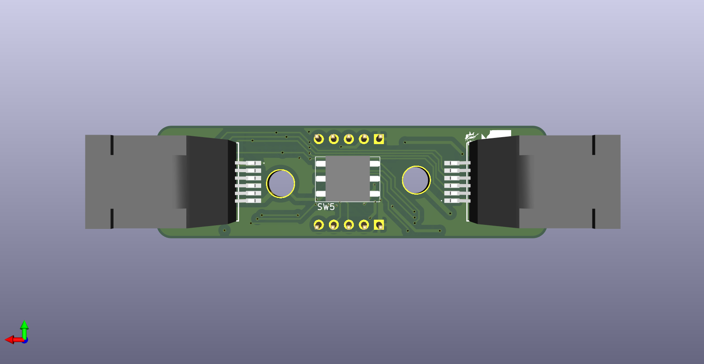
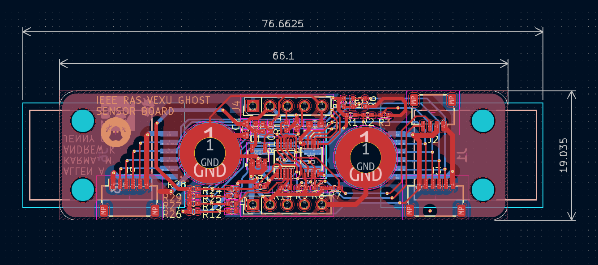
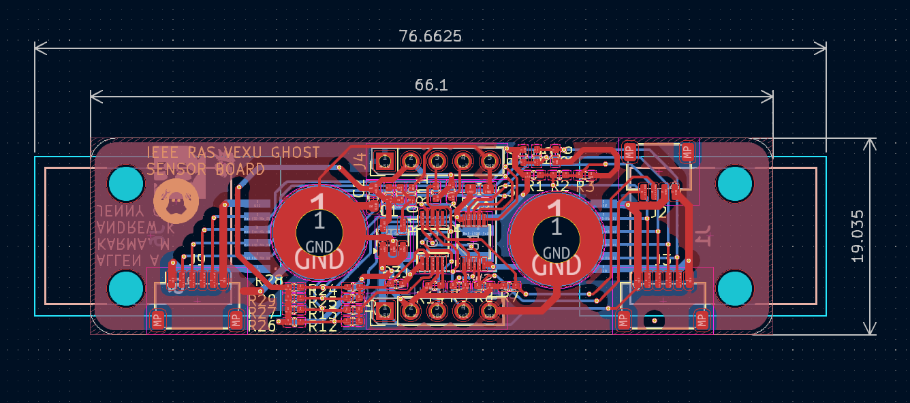

Overview
Base development board employing a custom long-distance I2C differential pairing and daisy-chaining hardware architecture using PCA9615 I2C differential bus buffer and LTC4316 single I2C device address translator to attach and deploy different module I2C sensor boards, i.e., color sensor (ISL29125), proximity distance sensor (VL53L4CD), IMU motion sensor (ICM-20602), as well as solenoid relays and I2C GPIO breakouts (TCA9636DGKR). Designed in KiCad.
 
